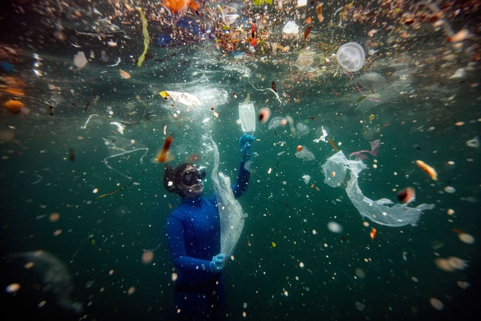

Turquía: ¿potencia emergente del reciclaje o vertedero de Europa?

El país organizador de la COP31 se ha convertido en el principal importador de residuos europeos, con graves costes ambientales
El Gobierno turco, organizador de la cumbre del clima de este año (COP31) en la ciudad de Antalya, ha definido la reducción de residuos y su reutilización dentro de la economía circular como una de las diez prioridades del encuentro. En el último borrador con el que pretende cerrar esta cita, que codirige con Australia, hay un punto en el que se hace referencia a la denominada Iniciativa Cero Residuos, una propuesta voluntaria sobre “economía circular” en la que se pone énfasis en el potencial de este sector “para contribuir a la reducción de emisiones de metano”. Esa iniciativa, que es paralela al sistema ONU y que por lo tanto no es vinculante, marca como objetivo “reducir a la mitad el…